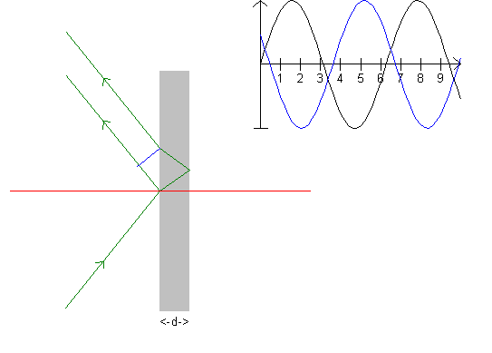

See also Young's interference

First, a recapitulation of an experiment which can be found in any physics book treating the subject of optics: A plane wave, like a water wave, moves toward a pier with a little hole. On the other side of the pier, waves propagate as the hole emits a ring wave. If there is not one, but two holes in the pier, the result is two ring waves which interfere. Where a wave crest meets a wave crest, a larger wave crest is seen (wave troughs are analogous), whereas when a wave crest meets a wave trough, the two waves extinguish one another. We say that the waves interfere respectively constructively and destructively.
In the thin film, interference arises between the ray reflected from the surface of the film and the ray reflected from the film's farthest surface. The upper graph shows whether the reflected rays are in phase or out of phase, using the blue line perpendicular to the reflected ray. In the table below, you can see that the phase difference is 1.15. This is almost out of phase, as an odd number: 1, 3, ... means out of phase, and even numbers: 0, 2, 4, ... means the waves are in phase.
Again, the parameters can be varied with the scroll bars on the panel to the left. Values can be found in the table; exercise and explanation can be found in the memo.
| Interference | |
| refractive index, n | 1,334 |
| wavelength /nm, green | 546,1 |
| incident angle i/° | 51 |
| refracted angle r/° | 35,6 |
| phase difference/pi | 1,150 |
| thickness d/ nm | 1000 |
The thin film can be an oil film on a surface of water or the wing of a butterfly. The simulation has nothing to do with the rainbow, but still, see Young's interference later on.
Exercise 3
Vary i and d to achieve destructive interference.
Vary i and d and the wavelength to achieve constructive interference.
Is constructive interference possible if d is smaller than the wavelength?
Assume that white light is sent towards the film at an angle of 30°. Which color(s) is/are seen in the reflected light, when d = 1000 nm?
Where do these interferences occur in nature?
Make a printout and write an explanation on it.